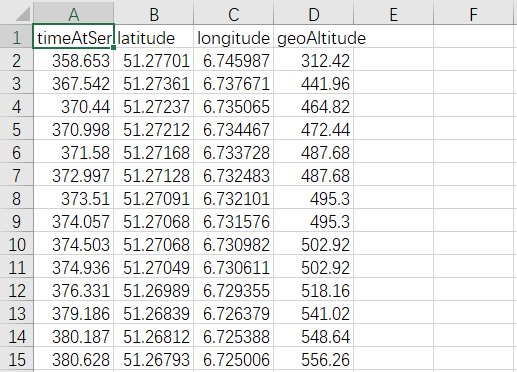
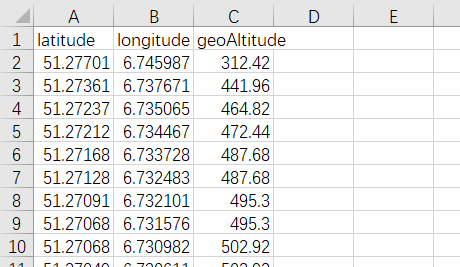

Now we can start creating the dataset. First, we need to split the dataset into different CSV files based on the aircraft's ID to facilitate model training.
Additionally, we need to remove the parts of the dataset that we do not need and format the dataset as follows:
By observing the time differences between each time point, we noticed that in most instances, the time difference between each time point is nearly constant. Therefore, we only need to use latitude, longitude, and altitude data as feature inputs for training the model.
Furthermore, since the changes in timestamps lack any discernible pattern, and our goal is solely to predict the aircraft's trajectory, we do not need to include timestamps as feature inputs for the model. This may slightly degrade the predictive performance of the model, but the overall impact is negligible.
At this point, our dataset has been created, and the following is an example of our dataset:
We could also train multiple aircraft trajectory datasets simultaneously, but this would require the inclusion of an aircraft number feature. In addition, it is time consuming and requires more powerful equipment. Therefore, here we train and predict the trajectory of only one airplane.